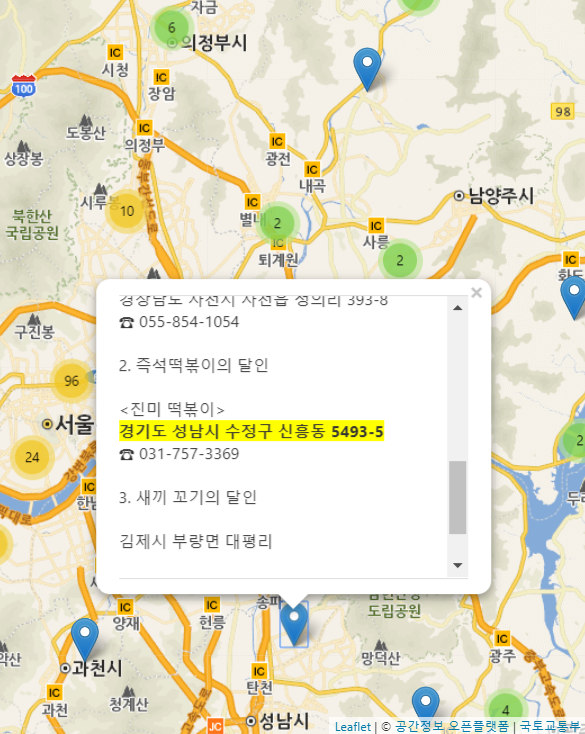

가끔 SBS 생활의 달인을 재밌게 보면서 뭔가 혹하는 내용이 나오면 실제로 가보고 싶을 때가 있다. 그 장소의 주소를 SBS 방송 게시판을 통해 찾아보게 되는데 이걸 지도에서 전체적으로 눈으로 보게 만들면 어떨까 하는 생각을 했었다. 그래서 시간을 내서 똑딱거려 웹페이지 하나를 만들어봤다. 이름하여 “달인의 추억”!
(2019-04-17) 소스는 GitHub에, 데모는 여기에~

기본적인 기능은 다음과 같다. PC 웹과 모바일이 동일하게 동작한다.
- 방송된 장소를 지도에 마커로 표시
- 마커를 누르면 해당 방송 내용 표시
이를 위해 다음과 같은 준비 과정을 밟았다.
- 생활의 달인 방송정보 게시판 내용 스크레이핑 - Node JS request, cheerio 패키지 사용
- 내용에서 주소 텍스트 추출 - 정규식 사용
- 주소를 위경도 좌표로 지오코딩 - 다음 로컬 API 사용
웹페이지는 클라이언트 HTML만으로 작성했고 지도 조작은 Leaflet, 지도 이미지는 국토교통부 VWorld 배경 지도를 사용했고 마커 클러스터링은 Leaflet Marker Cluster 플러긴을 사용했다.
부정형 데이터인 게시판 본문에서 주소를 추출하는 데 약간 시간을 잡아먹었는데 그 정규식을 참고 삼아 보이자면 다음과 같다. 시군구 이상 자치단체명을 모두 넣었다.
/((서울|부산|대구|인천|광주|대전|울산|세종|경기|강원|충청북도|충북|충청남도|충남|전라북도|전북|전라남도|전남|경상북도|경북|경상남도|경남|제주|종로구|중구|용산구|성동구|광진구|동대문구|중랑구|성북구|강북구|도봉구|노원구|은평구|서대문구|마포구|양천구|강서구|구로구|금천구|영등포구|동작구|관악구|서초구|강남구|송파구|강동구|중구|서구|동구|영도구|부산진구|동래구|남구|북구|해운대구|사하구|금정구|강서구|연제구|수영구|사상구|기장군|중구|동구|서구|남구|북구|수성구|달서구|달성군|중구|동구|남구|연수구|남동구|부평구|계양구|서구|강화군|옹진군|동구|서구|남구|북구|광산구|동구|중구|서구|유성구|대덕구|중구|남구|동구|북구|울주군|세종시|수원시|장안구|권선구|팔달구|영통구|성남시|수정구|중원구|분당구|의정부시|안양시|만안구|동안구|부천시|광명시|평택시|동두천시|안산시|상록구|단원구|고양시|덕양구|일산동구|일산서구|과천시|구리시|남양주시|오산시|시흥시|군포시|의왕시|하남시|용인시|처인구|기흥구|수지구|파주시|이천시|안성시|김포시|화성시|광주시|양주시|포천시|여주시|연천군|가평군|양평군|춘천시|원주시|강릉시|동해시|태백시|속초시|삼척시|홍천군|횡성군|영월군|평창군|정선군|철원군|화천군|양구군|인제군|고성군|양양군|충주시|제천시|청주시|상당구|서원구|흥덕구|청원구|보은군|옥천군|영동군|진천군|괴산군|음성군|단양군|증평군|천안시|동남구|서북구|공주시|보령시|아산시|서산시|논산시|계룡시|당진시|금산군|부여군|서천군|청양군|홍성군|예산군|태안군|전주시|완산구|덕진구|군산시|익산시|정읍시|남원시|김제시|완주군|진안군|무주군|장수군|임실군|순창군|고창군|부안군|목포시|여수시|순천시|나주시|광양시|담양군|곡성군|구례군|고흥군|보성군|화순군|장흥군|강진군|해남군|영암군|무안군|함평군|영광군|장성군|완도군|진도군|신안군|포항시|남구|북구|경주시|김천시|안동시|구미시|영주시|영천시|상주시|문경시|경산시|군위군|의성군|청송군|영양군|영덕군|청도군|고령군|성주군|칠곡군|예천군|봉화군|울진군|울릉군|진주시|통영시|사천시|김해시|밀양시|거제시|양산시|창원시|의창구|성산구|마산합포구|마산회원구|진해구|의령군|함안군|창녕군|고성군|남해군|하동군|산청군|함양군|거창군|합천군|제주시|서귀포시)[가-힣\s\w]+?[시군구읍면동길].*?\d.*?)($|☎)/gm이렇게 해도 약 300kB 텍스트 처리 시간은 순식간이며 거의 100% 주소 텍스트를 찾을 수 있었다.
문제는 지오코딩을 통해 위경도를 찾지 못한 항목이 생각보다 많았다. 주소 1044개 중 위경도 992개가 나왔으니 나머지 52개는 못찾은 것이다. 약 5%는 적지 않아 보인다. 이유는 주소 텍스트에 오타가 있었거나 지번 주소가 없어진 경우로 보인다. 오타는 수동으로 수정할 수 있겠으나 번거로움을 감수하진 않았다.
달인의 추억을 직접 한번 사용해보길 권하며 즐거운 맛집, 멋집 탐구 생활이 되길 바란다.